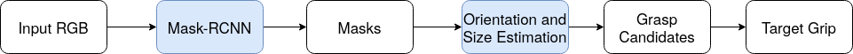

Robotplus Challenge 2022-10/11
{kind=link}
1. Output format
Field |
Description |
grips |
all grasp candidates. Nx7 with N number of grasps. Each line [x,y,z,w,h,angle,score] is a grasp candidate |
target_grip |
target grasp selected among all detectors’ results |
best_ind |
index of target grasp |
best_n_ind |
indexes of top n grasp candidates. |
im |
display grip on the input image |
2. Create and Load Detector
Using the default Kpick’s detector
from kpick.detectron2_detector import get_detectron_obj from detector_mask import ChallengeMaskDetector detector = get_detectron_obj(ChallengeMaskDetector)(cfg_path=cfg_path)
Note
Please refer configs/grip_mask.cfg
3. Modify and Load Detector
Extending the default Kpick’s detector
from kpick.detectron2_detector import get_detectron_obj from detector_mask import ChallengeMaskDetector class AppDetector(ChallengeMaskDetector): def new_function(self): print('new function') detector = get_detectron_obj(ChallengeMaskDetector)(cfg_path=cfg_path)
4. Demo on single RGB-D image
import cv2
from ketisdk.vision.utils.rgbd_utils_v2 import RGBD
# load image
rgb = cv2.imread('data/test_images/01_rgb.png')[:, :, ::-1]
depth = cv2.imread('data/test_images/01_depth.png', cv2.IMREAD_UNCHANGED)
rgbd = RGBD(rgb=rgb, depth=depth, depth_min=600, depth_max=800)
# set crop roi
rgbd.set_workspace(pts=[(320, 166), (870, 171), (870, 561), (321, 559)])
# load detector
detector = get_detectron_obj(ChallengeMaskDetector)(cfg_path='configs/grip_mask.cfg')
detector.args.flag.show_steps = True
# manually tuning params (optional)
detector.args.net.score_thresh = 0.8
detector.args.net.grip_width_range = (20,120)
detector.args.net.grip_plate = 20
ret = detector.predict_show_single(rgbd=rgbd)
# show
cv2.imshow('grip', ret['im'][:, :, ::-1])
cv2.waitKey()
{kind=link}
All lines and rectangles are grasp candidates. Rectangles are top n grasp poses and the thick one is the target grasp.
5. Parameters tuning
Parameter |
Description |
net.score_thresh |
score threshold of object detection |
net.grip_width_range |
tuple(w_min, w_max). Min and max values of gripper’s width |
net.grip_plate |
gripper plate’s width. |